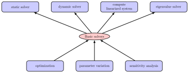
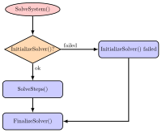
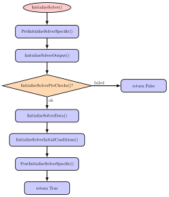
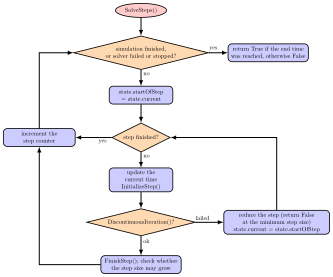
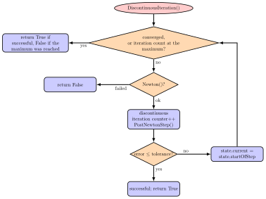
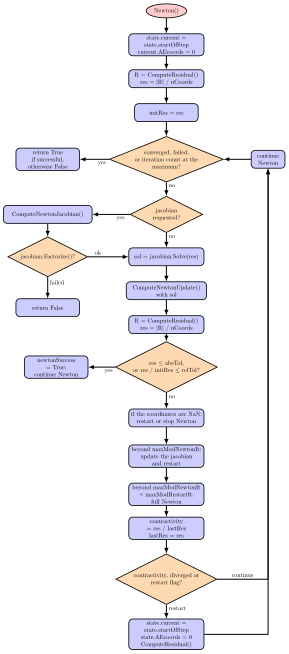
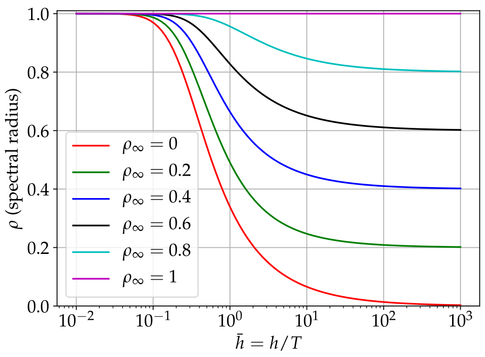
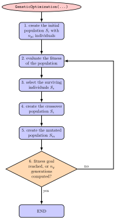

Solvers
This section provides and overview on most important solvers. Explicit and implicit dynamic solvers, as well as optimizers are described in more detail.
Solvers in Exudyn
The user has a couple of basic solvers available in Exudyn , see Fig. 29:
mbs.SolveStatic(...): compute static solution for given problem (may also be used to compute kinematic behavior by prescribing joint motion)mbs.SolveDynamic(...): time integration of equations of motionmbs.ComputeLinearizedSystem(...): computes the linearized system of equations and returns mass, stiffness, damping matricesmbs.ComputeODE2Eigenvalues(...): computes the eigenvalues of the linearized system of equations; only possible if no algebraic constraints in system; uses scipy to compute eigenvalues


Fig. 29 Basic and advanced solvers in Exudyn ; advanced solvers build upon any basic solver to perform more sophisticated operations
There are advanced solvers, like in exudyn.processing:
Optimization:
GeneticOptimization(...): find optimum for given set of parameter ranges using genetic optimization; works in parallelMinimize(...): find optimum withscipy.optimize.minimize(...)
ParameterVariation(...): compute a series of simulations for given set(s) of parameters; works in parallelComputeSensitivities(...): compute sensitivities for certain parameters; works in parallel
The advanced methods are build upon the basic solvers and essentially run single simulations in the background, see the according examples.
The basic solvers need a MainSystem, usually denoted as mbs, to be solved. Furthermore, a couple of options are usually to be given, which are explained shortly:
simulationSettings: This is a big structure, containing all solver options; note that only the according options forstaticSolverortimeIntegrationare used. Look at the detailed description of these options in Simulation settings. These settings influence the output rate and output quantity of the solution, solver reporting, accuracy, solver type, etc. Specifically, theverboseModemay be increased (2-4) to see the behavior of the solver and intermediate quantities.solverType: Only formbs.SolveDynamic(...): This is a simpler access to the solverType given in the internal structure oftimeIntegration.generalizedAlphaandsimulationSettings.timeIntegration.solverType.
The function mbs.SolveDynamic(...) sets the according variables internally. For available solver types, see the description of exudyn.DynamicSolverType in DynamicSolverType.
storeSolver: ifTrue, the solver is stored inmbs.sys['staticSolver']ormbs.sys['dynamicSolver']and also solver settings are stored inmbs.sys['simulationSettings']. After the solver has finished,mbs.sys['staticSolver']can be used to retrieve additional information on convergence, system matrices, etc. (see the solver structure).showHints: This shows a lot of possible solutions in case of no convergenceshowCausingItems: This shows a potential causing item if the linear solver failed; the item number is computed from the coordinate number that caused problems (e.g., a row that became zero during factorization); note that this item may not be the real cause in your problem
System equations of motion
The system equations of motion in Exudyn follow the notations of Nomenclature for system equations of motion and solvers and are represented as
Here, we introduce different Lagrange multipliers \(\tlambda_q\) and \(\tlambda_{\dot q}\) which have equal sizes as \(\tlambda\), while those \(\lambda_i\) which belong to holonomic constraints, are included in \(\tlambda_q\) and \(\tlambda_i\) belonging to non-holonomic constraints, are included in \(\tlambda_{\dot q}\), whereas other components in \(\tlambda_q\) or \(\tlambda_{\dot q}\) are zero.
It may help to know that for linear mechanical the term \(\fv_\SO\) becomes
in which \(\fv^a\) represents applied forces and stiffness matrix \(\Km\) and damping matrix \(\Dm\) become part of the system Jacobian for time integration.
General solver structure
The description of solvers in this section follows the nomenclature given in Notation.
Both in the static as well as in the dynamic case, the solvers run in a loop to solve a nonlinear system of (differential and/or algebraic) equations over a given time or load interval. Explicit solvers only perform a factorization of the mass matrix, but the Newton loop, see Fig. 34, is replaced by an explicit computation of the time step according to a given Runge-Kutta tableau.
In case of an implicit time integration, Fig. 30 shows the basic loops for the solution process. The inner loops are shown in Fig. 32 and Fig. 33. The static solver behaves very similar, while no velocities or accelerations need to be solved and time is replaced by load steps.
Settings for the solver substructures, like timer, output, iterations, etc., are described in Sections CSolverTimer – SolverOutputData. The description of interfaces for solvers starts in MainSolverStatic.


Fig. 30 Basic solver flow chart for SolveSystem(). This flow chart is the same for static solver and for time integration.


Fig. 31 Basic solver flow chart for function InitializeSolver().


Fig. 32 Flow chart for SolveSteps(), which is the inner loop of the solver.


Fig. 33 Solver flow chart for DiscontinuousIteration(), which is run for every solved step inside the static/dynamic solvers. If the DiscontinuousIteration() returns False, SolveSteps() will try to reduce the step size.


Fig. 34 Solver flow chart for Newton(), which is run inside the DiscontinuousIteration(). The shown case is valid for residualMode = 0.
Explicit solvers
Explicit solvers are in general only applicable for systems without constraints (i.e., no joints!). However, some solvers accept simple CoordinateConstraint, e.g., fixing coordinates to the ground.
Nevertheless, for constraint-free systems, e.g., with penalty constraints, can be solved for very high order and with great efficiency.
A list of explicit solvers is available, see DynamicSolverType, for an overview of all implicit and explicit solvers.
The solution vector \(\txi\) (denoted as \(y\) in the literature Hairer1987), which is defined as
and which includes ODE2 coordinates and velocities and ODE1 coordinates. All coordinates are computed without reference values.
The ODE1 and ODE2 equations of (35), with \(\tlambda=0\), are written in explicit form and converted to first order equations,
The system first order differential equations for explicit solvers thus read
Explicit Runge-Kutta method
Explicit time integration methods seek the solution \(\txi_{t+h}\) at time \(t+h\) for given initial value \(\txi_{t}\) (at the beginning of one step \(t\) or at the beginning of the simulation, \(t=0\)),
For any given Runge-Kutta method, the integration of one step with step size \(h\) is performed by an approximation
in which \(t + c_{i}h\) is the time for stage \(i\) and \(b_i\) the according weight given in the integration formula. Stages are within one step (therefor called one-step-methods), where \(c_i=0\) represents the beginning of the step and \(c_i=1\) the end. Note that \(c_{1}= 0\) for explicit integration formulas.
The unknown solution vectors \(\txi\) at the stages are abbreviated by
and computed by explicit integration (quadrature) formulas of lower order (\(g_i\) not to be mixed up with algebraic equations!),
After all vectors \(\gv_i\) have been consecutively evaluated, the step is updated by (36).
For exemplary tableaus of explicit and implicit Runge-Kutta methods, see the references of the
method in exudyn.utilities and the standard literature on Runge-Kutta schemes.
Automatic step size control
Advanced solvers, such as ODE23 and DOPRI5, include automatic step size control (activated with
timeIntegration.automaticStepSize = True in simulationSettings).
We estimate the error of a time step with current step size \(h\) by using an embedded Runge-Kutta formula, which includes two approximations (36) of order \(p\) and \(\hat p = p-1\), which is obtained by using two different integration formulas with common coefficients \(c_i\), but two sets of weights \(b_i\) and \(\hat b_i\), leading to two approximations \(\txi\) and \(\hat \txi\). These so-called embedded Runge-Kutta formulas are widely used, for details see Hairer et al. Hairer1987.
The according apporximations \(\txi\) and \(\hat \txi\) are used to estimate an error
for every component \(j\) of the solution vector \(\txi\). A scaling is used for every component of the solution vector, evaluating at the beginning (\(0\)) and end (\(1\)) of the time step:
Then the relative, scaled, scalar error for the step, which needs to fulfill \(err \le 1\), is computed as
The optimal step size then reads
Currently we use the suggested step size as
With the maximum step size \(h_{max} = \frac{t_{start} - t_{end}}{n_{steps}}\) and the minimum step size \(h_{min}\), given in the timeIntegration
simulationSettings.
The factor \(f_{maxInc}\) limits the increase of the current step size \(h\), the factor \(f_{sfty}\) is a safety factor for limiting the chosen step size relative to the optimal one in order to avoid frequent step rejections.
If \(h_{new} \le h\), the current step is accepted, otherwise the step is recomputed with \(h_{new}\).
For more details, see Hairer et al. Hairer1987.
Stability limit
Note that there are hard limitations for every explicit integration method regarding the step size. Especially for stiff systems (basically with high stiffness parameters and small masses, but also with restrictions to damping), the step size \(h\) has an upper limit: \(h < h_{lim}\). Above that limit the method is inherently unstable, which needs to be considered both for constant and automatic step size selection.
Explicit Lie group integrators
All explicit solvers including the automatic step size solvers (DOPRI5, ODE23) have been equiped with Lie group integration functionality, see Holzinger et al. HolzingerArnoldGerst2023.
Basically, the integration formulas, see Explicit Runge-Kutta method are extended for special rotation parameters.
Lie group integration is currently only available for NodeRigidBodyRotVecLG used in ObjectRigidBody (3D rigid body).
FFRFreducedOrder will be extended to such nodes in the near future.
To get Lie group integrators running with rigid body models, all 3D node types need to be set to NodeRigidBodyRotVecLG and
set explicit.useLieGroupIntegration = True.
Constraints with explicit solvers
Explicit solvers generally do not solve for algebraic constraints, except for very simple CoordinateConstraint.
All connectors having the additional type=Constraint, see the according object in ObjectConnectorSpringDamperff.,
are in general not solvable by explicit solvers.
Currently, only CoordinateConstraint with one coordinate fixed to ground can be accounted for,
if explicit.eliminateConstraints == True.
However, this offers the great flexibility to compute finite elements (imported meshes or ANCF beams) to be (partially) fixed to ground.
A CoordinateConstraint that fixes a coordinate with index \(j\) to ground leads to the simple algebraic ODE2 equation
which can be solved by the implemented explicit solvers by just setting \(q_j = 0\) previously to every computation and \(\dot q_j = 0\) after every RHS evaluation.
NOTE that, if explicit.eliminateConstraints == False, constraints are ignored by the explicit solver (and all algebraic variables are set to zero). This may be wanted (e.g. to investigate the free motion of bodies), but in general leads to wrong and meaningless solution.
Implicit trapezoidal rule-based, Newmark and Generalized-alpha solver
This solver represents a class of solvers, which are – in the undamped case – based on the implicit trapezoidal rule (in the view of Runge-Kutta methods). The interpolation of the quantities for one step includes the start and the end value of the time step, thus being called trapezoidal integration rule. In some special cases in Newmark’s method Newmark1959, the interpolation might only depend on the start value or the end value.
For now, all implemented solvers can be viewed as a generalization of Newmark’s method, but there are called differently in the solver interfaces
Implicit trapezoidal rule (Newmark with \(\beta = \frac 1 4\) and \(\gamma = \frac 1 2\))
Newmark’s method Newmark1959
Generalized-\(\alpha\) method (\(=\) generalized Newmark method with additional parameters), see Chung and Hulbert Chung1993 for the original method and Arnold and Brüls Arnold2007 for the application to multibody system dynamics.
Newmark and Generalized-alpha method
Newmark’s method has two parameters \(\beta\) and \(\gamma\). The main ideas are given in the following. First, displacements and velocities are linearly interpolated using the accelerations \(\ddot \qv\) of the beginning of the time step (subindex ‘0’) and the end of the time step (subindex ‘T’). The \(2^\mathrm{nd}\) order differential equations displacements and velocities and for \(1^\mathrm{st}\) order differential equations coordinates are given by (definition of \(\aalg\) will become clear later):
Hereafter, the system equations are solved at the end of the time step (\(T\)) for the unknown accelerations as well as for \(1^\mathrm{st}\) order differential equations and algebraic equations coordinates.
Remarks:
The system of equations may be solved for accelerations \(\ddot \qv\), but also for displacements \(\qv\) or even velocities as unknowns while the remaining quantities are reconstructed from (38). In case of displacements as unknowns, a scaling of the Jacobian is necessary, see later.
For consistency reasons, one may set \(\gamma_\FO = \gamma\), but currently we use \(\gamma_T = \frac 1 2\), leading to no numerical damping for ODE1 variables \(\yv\).
In the extension to the so-called generalized-\(\alpha\) method Chung1993, algorithmic accelerations \(\aalg\) are used in (38).
Algorithmic accelerations are no longer equivalent to the time derivatives of displacements, \(\aalg \neq \ddot \qv\); thus, both sets of variables are used independently. In case of Newmark or the implicit trapezoidal rule just use \(\aalg = \ddot \qv\).
Implicit solvers are also available with Lie groups, if according rigid body nodes (
NodeRigidBodyRotVecLG) are used, for theory see Holzinger et al. HolzingerArnoldGerst2023.
For generalized-\(\alpha\), the algorithmic accelerations \(\aalg\) are computed from the recurrence relation
which can be resolved for the unknown \(\av_T\),
For the first step, one can simply use \(\aalg_0 = \ddot \qv_0\).
Parameter selection for Generalized-alpha
Compared to alternative implicit integration methods (including the Newmark method), the generalized-\(\alpha\) integrator’s parameters break down to one single parameter \(\rho_\infty\), which allows to chose numerical damping in a practical way.
Based on a simple single DOF mass-spring-damper model Bauchau2011, having the eigen frequency \(\omega = 2\pi f\) with frequency \(f\) and period \(T=1/f\), the spectral radius \(\rho\) for the integrator defines the amount of damping for a given step size \(h\) related to \(T\), thus using the dimensionless step size \(\bar h=h/T\).
In Fig. 35 the spectral radius is shown versus \(\bar h\) for various spectral radii at infinity \(\rho_\infty\). Here, \(\rho_\infty\) specifies the numerical damping of very time step for large step sizes (or very high frequencies). An amount of \(\rho_\infty=0.9\) means that high frequency parts of the system ((\(\bar h \gg 1\)); high compared to the step rate) are damped to \(90\%\) in every step, reducing an initial value \(1\) to \(2.66e-5\) after 100 steps, which is already much larger than usual physical damping in many cases.
Furthermore, low frequency parts of the system (\(\bar h \ll 1\)) receive almost no numerical damping, see again Fig. 35. Exemplarily, consider \(\rho\) a low frequency situation with different \(\rho_\infty\):
\(\rho(\bar h=0.01, \rho_\infty=0.9) = 1 - 1.13\cdot 10^{-9}\)
\(\rho(\bar h=0.01, \rho_\infty=0.6) = 1 - 1.22\cdot 10^{-7}\)
which shows that numerical damping is very low for moderately small step sizes (100 steps for one oscillation).
Obviously, \(\rho_\infty\) does not have a large influence for very high or low frequencies in the system as long as it is \(\neq 1\) and we could even use \(\rho_\infty=0\). Regarding differential algebraic equations (DAEs), \(\rho_\infty<1\) allows to integrate index 3 DAEs. Typically a value of \(\rho_\infty=0.7\) leads to a stable integration, but values depend on the structure of the multibody system.
Once having chosen \(\rho_\infty\), all other parameters follow automatically Chung1993, regarding the \(\alpha\)s
and Newmarks’s parameters,


Fig. 35 Spectral radius for generalized-\(\alpha\) method depending on dimensionless step size \(\bar h=h/T\), in which \(T\) is the period of an equivalent single DOF mass-spring-damper system.
Newton iteration
Thus, the residuals at the end of the time step (\(T\)) read (put all terms to LHS):
We consider two options for \(2^\mathrm{nd}\) order differential equations: (A) solve for unknown accelerations \(\acc_T\), or (B) for unknown displacements \(\qv_T\).
(A) Solve for unknown accelerations
The unknowns for the Newton method then are
and at the beginning of the step, we have
For the Newton method, we need to compute an update for the unknowns of (40), using the previous residual \(\rv_{k}\) and the inverse of the Jacobian \(\Jm_{k}\) of Newton iteration \(k\),
The Jacobian has the following \(3 \times 3\) structure,
in which we consider \(\Jm_{\FO\SO}\) and \(\Jm_{\SO\FO}\) to vanish in the current implementations, which means that coupling of ODE1 and ODE2 coordinates is only possible due to algebraic equations.
The remaining terms in the Jacobian are currently (or by default settings) evaluated as:
Note that some parts of the Jacobian are neglected, such as mass matrix and constraint Jacobian terms in \(\Jm_{\SO\SO}\), which are usually of minor influence. Furthermore, Jacobians for state-dependent loads are neglected except for system-wide numerical Jacobians or if computeLoadsJacobian in static or time integration solvers is set True.
Once an update \(\qv^\mathrm{Newton}_{k+1}\) has been computed, the interpolation formulas (38) need to be evaluated before the next residual and Jacobian can be computed.
(B) Solve for unknown displacements
This approach is similar to the previous approach and follows exactly the algorithm given by Arnold and Brüls Arnold2007, however, extended for ODE1 variables, which are integrated by the (undamped) trapezoidal rule. Documentation will be added lateron.
Initial accelerations
For the solvers based on the implicit trapezoidal rule, initial accelerations are necessary in order to significantly increase the accuracy of the first time step. For this reason, the constraints \(\gv(\qv_0, \dot \qv_0, \yv_0, \tlambda_0, t) = 0\) in (34) are differentiated w.r.t. time,
Currently, we assume \(\frac{\partial \gv}{\partial \tlambda} = 0\) for all further derivations on initial accelerations. For velocity level constraints, (42) is used to extract initial accelerations \(\ddot \qv_0\),
Finally, the equations for the computation of the initial accelerations read for velocity level constraints, note that \(\yv_{init}\) are the nodal initial values for \(\yv\),
The term \(\frac{\partial \gv}{\partial t}\) can only occur in case of user functions and therefore currently not implemented, and the ODE1 term \(\frac{\partial \gv}{\partial \yv} = 0\) is not used yet in constraints.
For position level constraints, we assume \(\frac{\partial \gv}{\partial \dot \qv} = 0\) and \(\frac{\partial \gv}{\partial \yv} = 0\) in (42) and perform a second derivation w.r.t. time,
For position level constraints, (44) is used to extract initial accelerations \(\ddot \qv_0\),
Finally, the equations for the computation of the initial accelerations for position level constraints read
The linear system of equations, either (43) or (45), is solved prior to an implicit time integration if
simulationSettings.timeIntegration.generalizedAlpha.computeInitialAccelerations = True,
which is the default value.
Optimization and parameter variation
The real benefit of powerful multi-body simulation emerges only if combined with modern but also simple analysis and evaluation methods. Therefore, Exudyn has been integrated into the Python language, which offers a virtually unlimited number of methods of post-processing, evaluation and optimization. In this section, two methods that are directly integrated into Exudyn are revisited.
Both write their results to the file given as resultsFile while they run, and such a run is
usually long. python -m exudyn monitor --last shows that file as it grows, see
The results monitor.
Parameter variation
Parameter variation is one of the simplest tools to evaluate the dependency of the solution of a problem on certain parameters. This usually requires the computation of an objective (goal, result) value for a single computation (e.g, some error norm, maximum vibration amplitude, maximum stress, maximum deflection, etc.) for every computation. Furthermore, it needs to be run for a set of parameters, e.g., using a for loop.
While this could be done manually in Exudyn , it is recommended to use built-in functions, which simplify evaluation and postprocessing and directly enable parallelization.
The according function ParameterVariation(...), see Function: ParameterVariation, performs a set of multi-dimensional parameter variations using a dictionary that describes the variation of parameters. See also parameterVariationExample.py in the Examples folder for a simple example showing a 2D parameter variation. The function ParameterVariation(...) requires the multiprocessing Python module which enables simple multi-threaded parallelism and has been tested for up to 80 cores on the LEO4 supercomputer at the University of Innsbruck, achieving a speedup of 50 as compared to a serial computation.
Genetic optimization
In engineering, we often need to find a set of unknown, independent parameters \(\xv \in \Rcal^n\), \(\xv\) being denoted as design variables and \(\Rcal^n\) as design space. Sometimes, the design space is further subjected to constraints \(\gv(\xv)=0\) as well as inequalities \(\hv(x) \le 0\), which are not considered here. For simple solutions for constrained optimization problems using penalty methods, see the introductory literature Kiusalaas2013.
Optimization problems are written in general in the form
where \(f(\xv)\) denotes the objective function (=fitness function). If we would like to maximize a function \(\bar f(\xv)\), simply set \(f(\xv)=-\bar f(\xv)\).
In engineering, the optimization problem could seek model parameters, e.g., the geometric dimensions and inertia parameters of a slider crank mechanism, in order to achieve smallest possible forces at the supports. Another example is the identification of unknown physical parameters, such as stiffness, damping of friction. This can be achieved by comparing measurement and simulation data (e.g., accelerations measured at relevant parts of a machine). Lets assume that \(\epsilon(t)\) is an error computed in every time step of a computation, then we can set the objective (=fitness) function, e.g., as
as the integral over the error \(\epsilon\) between measurement and simulation data. In general, a parameter variation would be sufficient to compute sufficient computations for all combinations within the design space, however, a 3D design space with 100 variations into every direction (e.g., varying the unknown damping coefficient between 1 and 100, etc.) would already require 1000.000 computations, which in an ideal case of 1 second/computation leads to almost 2 weeks of computation time.
As an alternative stochastic methods can be use to compute only the objective function for a smaller set of randomly generated design variables, which usually show regions with better parameters (lower \(f\)) in scatter plots.
Genetic algorithms[Goldberg1989; Whitley1994] can significantly reduce the necessary amount of objective function evaluations in order to perform the optimization. Genetic identification algorithms have been already successfully applied to multibody system dynamicsEder2014.
The general structure of a (canonical) genetic algorithm is depicted in Fig. 36.


Fig. 36 Basic solver flow chart genetic algorithm / optimization.
For details, see the cited literature. Here, we focus on the implementation of the function
GeneticOptimization(...), see Function: GeneticOptimization.
The initial population (step 1) is created with initialPopulationSize individuals with uniformly distributed random design variables \([\xv_0, \ldots, \xv_{n_{pi}-1}]\) (\(\xv_i=[x_{i0}, x_{i1}, \ldots]\) being a set of genes, with single genes \(x_{i0}\), \(x_{i1}\), …) in the search space, which is given in the dictionary parameters. Herafter (steps 2-6), we iteratively process a population for a certain numberOfGenerations generations.
In step 3, the surviving individuals \(S_s\) with best fitness (smallest value from evaluation of objectiveFunction) are selected and considered further in the optimization. If the distanceFactor is used, the surviving individuals must be located within a certain distance (measured relative to the range of the search space) to all other surviving individuals. This option guarantees the search within several local minima, while a conventional search often converges to one single minimum.
Crossover (step 4) is performed using a crossover of all available parameters of two randomly selected parents when generating children from the surviving individuals. The crossover of genes is performed only for a part of the new population, defined by crossoverAmount.
Finally, in step 5, we apply mutation to all genes, which extends the search to the surrounding design space of the individuals created by crossover. The mutation could be performed by means of certain distribution functions in order to focus on the currently best search regions. However, in the current implementation of GeneticOptimization(...) we simply use a uniform random variable to distribute the genes over a certain percentage of the design space, which is reduced in every generation defined by the rangeReductionFactor \(r_r\). This allows us to restrict further search to a smaller subregion of the design space and in general allows a reduction of search space by means of \(r_r^{n_g}\). In the ideal case, using sufficiently large population sizes and being lucky with the found random values, a range reduction factor \(r_r=0.7\) reduces the search space by a factor of \(100\) after every 13 generations, allowing to obtain 4 digits of accuracy for design variables after 26 generations for suitable optimization problems.
It should be noted that still this optimization method is based on random values and thus may fail occasionally for any problem case. In order to get reproducible results, set randomizerInitialization to any integer value (simply: 0) in order to get identical results for repeated runs. Setting the latter variable guarantees that the Python (numpy) randomizer creates the same series of random values for initial population, mutation, etc.